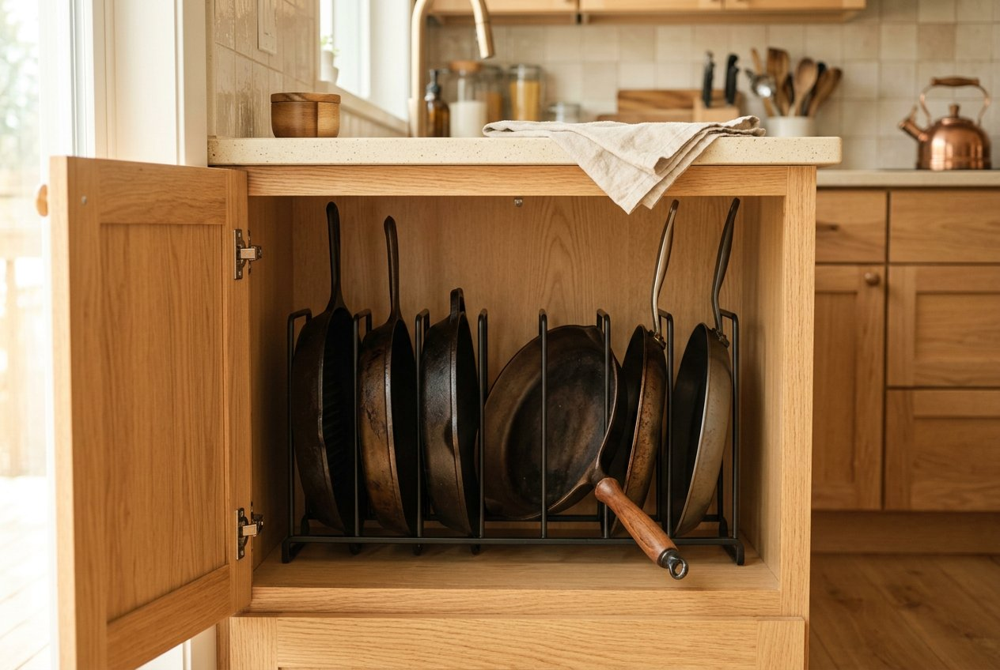

Storage & shelving
Will an adjustable cookware rack fit your cabinet?
Measure the pans, the cabinet opening and the room you need to take a pan out with one hand.

Illustration of the category, not the observed listing.
Measure the opening, not just the shelf
Write down the usable depth and height with the door open. Note hinges and shelf lips. Then check that the assembly, including protruding handles, can clear the opening.
Use your most awkward pan as the test
Check the listing and manual for divider spacing and load limits. The observed ORDORA listing describes adjustable tiers and lightweight cookware. Don’t assume those tiers will support your heaviest pan.
Plan for lids and handles
Decide where the lid and handle of each pan will go. Sketch the layout, then count the pieces you can access without lifting another one. That’s a more useful target than filling every slot.
Keep reading
Walls & finishes
What tools do you need for peel-and-stick wallpaper?
Set yourself up to smooth, trim and finish without rummaging for tools halfway through the wall.
Kitchen organization
Adhesive or screws for an under-cabinet paper towel holder?
Before you pick a mount, check the cabinet underside, the roll you buy and how much room you need to swap it.